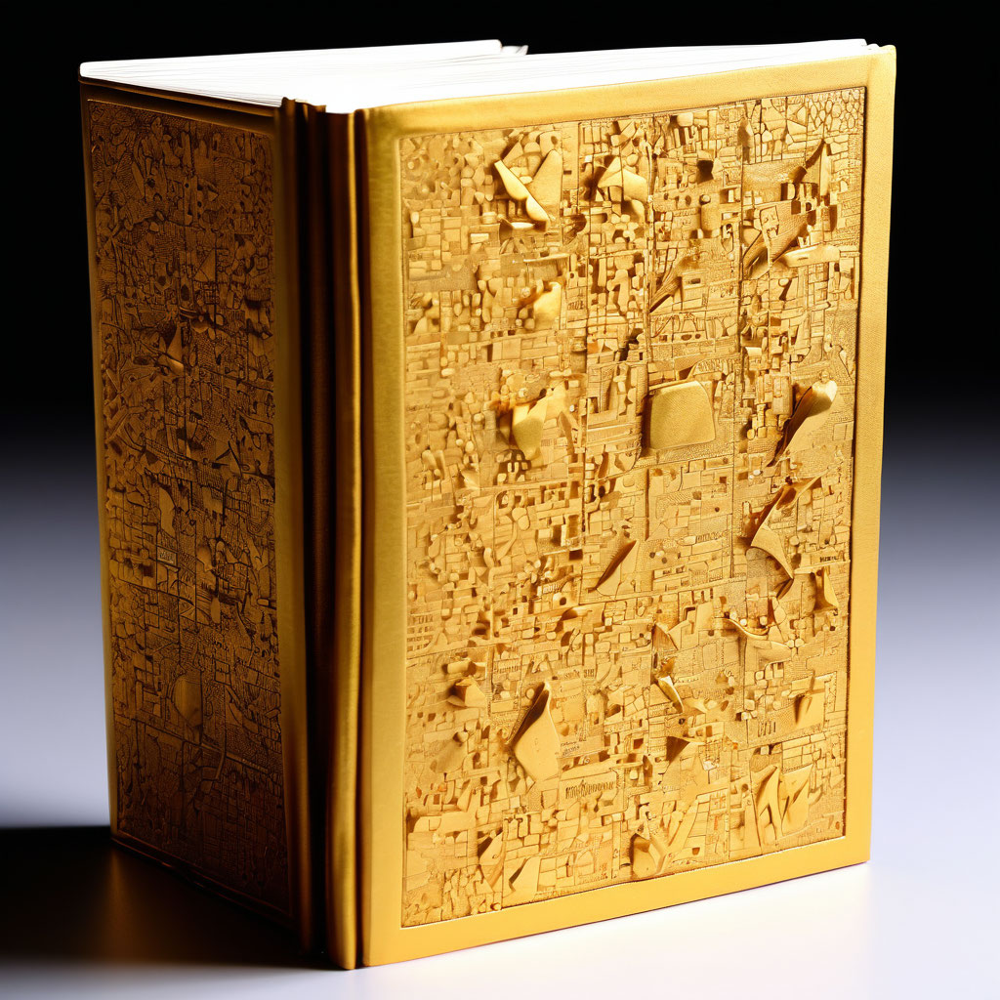

Золотая заплатка

Описание:
Техника «Золотая заплатка» помогает глубже понимать себя, изучать уникальные карты реальности, улучшать отношения и работать с динамикой семейной системы.
Категория техники:
Процессы
Время:
10 минут
Зачем:
*достичь более глубокого понимания себя; *исследовать свои возможности в достижении поставленных целей, свою уникальность (особенно при помощи автопортрета); *изучить динамику семейной системы, увидеть повторяющиеся (часто в поколениях) негативные паттерны поведения и стоящие за ними внутренние переживания; *восстановить связь с ранее заблокированными чувствами и перенести их в сферу осознаваемого; снизить страхи и тревогу, стать более уверенным в себе; *изучить собственные уникальные карты реальности и стоящие за ними ограничения, а *также актуализировать свои возможности; *улучшить отношения с семьей и другими людьми.
Как это работает:
Одно из фундаментальных предположений НЛП состоит в том, что бо́льшая часть наших жизненных проблем связана не столько с неудачами или провалами в прошлом, сколько с нашим отношением к этим фактам сегодня. Мы реагируем на них, исходя из нашей ментальной карты, построенной на опыте, родительских предписаниях, профессиональных навыках и личностной истории. Записанная в нашей нейросети, ментальная карта фактически определяет то, как мы видим реальность и взаимодействуем с ней. Погружаясь в просмотр фотоснимков, мы снова переносимся в те места и те моменты, которые запечатлены на них, вспоминаем события и разговоры, даже происходившие много лет назад. В процессе восприятия изображения мы проецируем свои уникальные внутренние смыслы на фотографию и благодаря этому можем заново в режиме реального времени прожить эту историю и найти другой, более подходящий способ реагирования. Таким образом формируется новая нейронная связь (актуализируется ментальная карта), которая позволяет нам каждый раз при воспоминании о событии не погружаться в негативные переживания, а увидеть иные способы их разрешения или интерпретации. Даже реакции на открытки, изображения из журналов или в интернете могут пролить свет на нашу внутреннюю карту. В этом случае фотография становится уникальным визуальным (невербальным) кодом, содержащим важные подсказки о том, как мы понимаем мир и свое место в нем. И именно в этой реакции — глубоких воспоминаниях и сильных чувствах, доступных нашему осознанию и переосмыслению, — и заключается реальный терапевтический эффект любой фотографии. Недаром говорится, что одна фотография может рассказать больше, чем тысяча слов.
Алгоритм выполнения:
-
Для выполнения психотехники «Золотая заплатка» вам понадобятся следующие материалы: ваше распечатанное портретное фото размером 10×15 см (желательного того же периода, что и проблема, с которой вы хотите поработать); лист бумаги формата А4; блокнот и ручка; золотая или серебряная краска (лак, блестки или маркер); кисточка или ватная палочка (для нанесения клея и краски); клей ПВА.
-
Погрузитесь в воспоминания о моменте, когда вы были собой недовольны. Вспомните все детали этой истории, задействовав органы чувств (увидьте, услышьте, ощутите как можно полнее свой провал). ПРИМЕР. Вы недостойно расстались со своим партнером, и вас преследует чувство вины. Это выражается в том, что вы неосознанно наказываете себя, выбирая недостойных партнеров.
-
Возьмите свое портретное фото, сделайте глубокий вдох-выдох и разорвите фотографию на несколько частей.
-
Глядя внимательно на обрывки фото, ответьте на такие вопросы: Какой опыт вам принесло неприятное событие? Что нового вы узнали о себе? О других? О мире? Например, вы увидели, что вы не идеальны, с изъянами. Кто или что помогло вам справиться с неприятным событием и двигаться дальше? Какие ваши личные качества помогли вам в этом? Какое новое решение вы смогли принять в результате? Нравится оно вам или нет? Хотели бы вы его изменить? Например, вы посмотрели на свою жизнь под другим углом (неудача уже случилась, и от этого никуда не деться). Но теперь вы больше не наказываете себя, а ищете для новых отношений достойных и интересных людей. Найдите подходящую метафору вашего нового опыта. ПРИМЕР. Напишите своему бывшему партнеру письмо в произвольной форме, в конце которого обязательно попрощайтесь с ним. Второе письмо напишите себе (в прошлое) и поделитесь в нем бесценным опытом. Затем оба письма нужно символически разорвать.
-
На листе бумаги сложите обрывки вашего портрета так, чтобы получилась целостная фотография.
-
Склейте ваш портрет из кусочков прямо на листе бумаги, используя клей.
-
Нанесите по швам склейки с лицевой стороны портрета золотую или серебряную краску (яркий маркер, блестки) в виде линий или узоров.
-
После того как фотография и краска на ней высохнут, на обратной стороне напишите ваше новое решение или метафору полученного опыта. ВАЖНО! Если во время выполнения упражнения вы ощущаете сильный дискомфорт или неконтролируемые эмоции, рекомендуем вам прервать выполнение данной психотехники и обратиться за консультацией к специалисту (психологу или психотерапевту).
-
Для более глубокой рефлексии по поводу травмирующей ситуации рекомендуем вам в конце выполнения данной психотехники дополнительно ответить на такие вопросы: Легко ли вам было делать эту технику? Какие мысли были у вас во время работы? Какие чувства и ощущения были у вас в теле в процессе работы? Появилось ли у вас дополнительное понимание (решение) после окончания выполнения техники? Если да, то запишите его на обратной стороне листа, к которому приклеена фотография. Данная психотехника может быть использована как самостоятельно, так и для работы в группе. После работы с фотографией, для того чтобы вернуться в режим «здесь и сейчас», рекомендуется сделать упражнение «Заземление».
Дополнительные упражнения:
- Вайзер, Джуди. Техники фототерапии. Исследование секретов личных фотографий и семейных фотоальбомов. — М.: Генезис, 2016.
- Воронина Ю. В. Работа с личными фотографиями в режиме фототерапия. Веб-публикация: https://www.b17.ru/article/rabota_s_lichnymi_fotografiyami_v_rezhim/ [15.06.2020].
- Кевац М. А. Фототерапия как инструментарий психотерапии // Консультативная психология и психотерапия. — 2015. — Том 23, № 3.
- Akeret, Robert U. Photoanalysis. — Peter H. Wyden, Inc.; Book Club (BCE/BOMC), 1973.
- Gibson, Neil. Therapeutic photography: enhancing patient communication. Journal of Kidney CareVol. 2, No. 1, 2017. Веб-публикация:https://www.magonlinelibrary.com/doi/full/10.12968/jokc.2017.2.1.46 [18.06.2020].
- Image Therapeutics. Веб-публикация: http://truecenterpublishing.com/photopsy/therapeutics.htm [22.05.2020].
- Natoli , Adam P. Photographs: Remember and Forgotten. Веб-публикация: https://www.researchgate.net/profile/Adam_Natoli/publication/297731542_The_psychologically_beneficial_aspects_of_remembered_and_forgotten_photographs/links/56e18ba908aec09a8bc07fa9/The-psychologically-beneficial-aspects-of-remembered-and-forgotten-photographs.pdf [17.05.2020].
- Natoli, Adam P. The Psychologically Beneficial Aspects of Photography». Independent «Study» Project Psychology, Department, Rider&University, Semester, 2011. Веб-публикация: http://truecenterpublishing.com/photopsy/psy%20benefits%20of%20photo.pdf [18.05.2020].
- Weiser J. PhotoTherapy, Therapeutic Photography, & Related Techniques. About the ‘why’ of your photographs — and the feelings and stories they create. Веб-публикация: https://phototherapy-centre.com/ [11.06.2020].
- Гришковец Е. Планета. — Брест: Наша Альтернатива, 2005.
- Вайзер Дж. Техники фототерапии: использование интеракций с фотографиями для улучшения жизни людей // Визуальная антропология: настройка оптики / Под ред. Е. Ярской-Смирновой, П. Романова. — М.: Вариант, ЦСПГИ, 2009.
- Вайзер Дж. Техники фототерапии. Исследование секретов личных фотографий и семейных фотоальбомов. — М.: Генезис, 2017.
- Селзник Б. Хранитель времени. — М.: АСТ, 2010.
- Лапин А. Фотография как… — М.: Тримедия, 2018.
- Работа с личными фотографиями в режиме фототерапия. Веб-публикация: https://www.b17.ru/article/rabota_s_lichnymi_fotografiyami_v_rezhim/.
- Weiser J. PhotoTherapy techniques: exploring the secrets of personal snapshots and family albums (2nd ed.). — Vancouver: PhotoTherapy Centre, 1999.